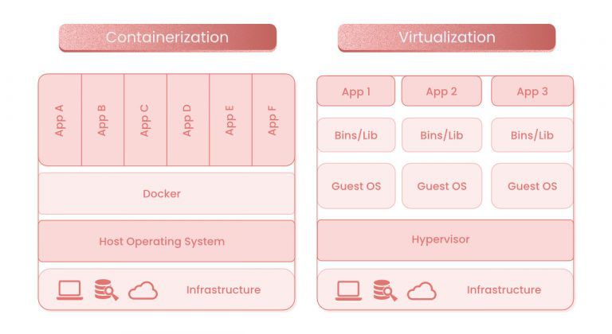

What is Virtualization?
Virtualization is a technology that allows one physical machine (like your computer) to act as if it were multiple separate computers, called “virtual machines” (VMs). Each virtual machine runs its operating system and applications, but they all share the physical resources of the host machine, such as CPU, memory, and storage.
Simple Example:
Imagine you have a house with one big room, but you want to create different workspaces for different tasks, like a kitchen, an office, and a bedroom. Instead of building separate rooms, you could use room dividers to create separate areas within the same space. Each area serves a different purpose, but they all share the same overall space.
In virtualization:
- The house = the physical machine (your computer or server)
- Room dividers = virtualization software (called a “hypervisor”)
- Separate areas = virtual machines, each running its operating system and applications
This approach helps use resources more efficiently because instead of needing a whole new computer for each task, you can run multiple virtual machines on one physical machine. Virtualization is widely used in modern computing to save money, improve scalability, and increase flexibility in resource use.
History of Virtualization
The concept of virtualization dates back to the 1960s when IBM developed it to improve the efficiency of large mainframe computers. Back then, mainframes were costly and limited, so IBM introduced virtual machines (VMs) that allowed different users to run separate workloads on the same physical machine.
- 1960s: IBM introduces virtualization to allow time-sharing on mainframes, giving multiple users the ability to access computing resources simultaneously.
- 1970s: Virtualization remained primarily in mainframe environments, as smaller computers like personal computers (PCs) didn’t need this level of resource sharing.
- 1990s: As PCs grew in power, companies like VMware began to apply virtualization to servers, enabling more efficient use of resources in data centers.
- 2000s and Beyond: Virtualization became mainstream, transforming modern IT infrastructure by enabling cloud computing. Today, virtual machines are fundamental to many cloud services, such as Amazon Web Services (AWS) and Microsoft Azure, helping businesses scale efficiently.
From mainframes to modern cloud computing, virtualization has been key in maximizing hardware utilization, reducing costs, and improving flexibility in IT environments.
What is Containerization?
Containerization is a technology that allows developers to package an application and all of its dependencies into a single, portable “container.” This container can run consistently on any system that has the container runtime, making it easier to deploy and run applications across different environments, like development, testing, and production.
Simple Example:
Think of containerization like packing a lunchbox:
- You want to bring lunch to work or school. Instead of worrying about whether the fridge or microwave will be available, you pack everything you need (food, utensils, napkins) into a lunchbox.
- Now, no matter where you go, you can enjoy your meal without worrying about the kitchen setup.
In containerization:
- The lunchbox = the container, which holds everything the application needs to run (code, libraries, dependencies).
- The food and utensils = the application and its dependencies.
- Wherever you go = any computer or server that has a container runtime (like Docker).
By using containers, you ensure the application behaves the same way, no matter where it’s run. Containers are popular in modern software development because they make it easier to run, test, and deploy applications consistently across different environments.
History of Containerization
Containerization has roots that date back to the early 2000s, though the concept of isolating applications in environments has existed for much longer.
2000s: The idea of containerization emerged with Solaris Zones (2004) and Linux Containers (LXC) (2008). These early technologies allowed for the creation of isolated environments on the same system, where applications could run without interfering with one another.
2013: The real breakthrough came with the release of Docker, a tool that made containerization simple, portable, and accessible to a wide audience. Docker standardized the container image format and introduced an easy-to-use interface, revolutionizing how developers build, test, and deploy applications.
2014 and Beyond: Following Docker’s success, other technologies like Kubernetes (developed by Google) emerged to manage and orchestrate containers at a larger scale. This led to the widespread adoption of containerization across various industries, particularly in cloud computing and DevOps.
Today, containerization is a cornerstone of modern software development, allowing developers to move applications between environments and scale them efficiently and easily.
Key Differences from Virtualization:
While virtualization involves creating multiple virtual machines on one physical machine, containerization focuses on packaging just the application and its dependencies into lightweight containers. Unlike virtual machines, containers share the same operating system kernel, making them more efficient regarding resource usage.

 Docker is an open-source tool that is compatible with GitHub features. While Kubernetes have greater scaling and is used for larger operations, Docker is ideal for personal use and for smaller companies and cloud infrastructures that prioritize portable workloads.
Docker is an open-source tool that is compatible with GitHub features. While Kubernetes have greater scaling and is used for larger operations, Docker is ideal for personal use and for smaller companies and cloud infrastructures that prioritize portable workloads.